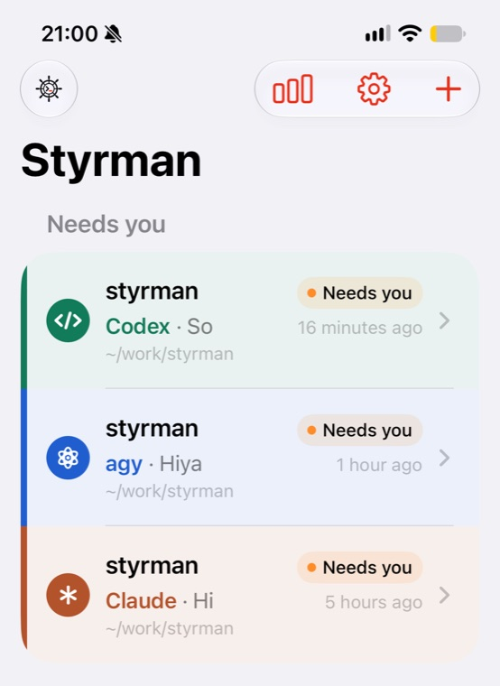

See what needs you
Read replies, check tool output, and see which sessions are working, waiting, or done.
Follow your coding agents from your phone. See what needs your attention, approve a command, or send the next prompt while work continues on your Mac.
Runs on your Mac · iPhone app via TestFlight soon (build from source today) · Android from source · Open source
$ codex
› /styrSession shared with Styrman.

Read replies, check tool output, and see which sessions are working, waiting, or done.
Review the command before approving it. Send a follow-up or start another session in a folder on your Mac.
Dictate a prompt instead of typing it, and have replies read aloud. Each agent has its own voice.
Ask Claude to check with Codex: it sends the question with styr ask and reports the answer. You see both sides on your phone.
Connect Karv on your Mac to view quota windows, reset times, and activity estimates in the Usage screen.
Your agents run in your terminal. Styrman stores session history on your Mac and connects your paired phone over Tailscale. Share a session when you need it with /styr.
No Styrman account. Your phone reaches your Mac over your own Tailscale network (that needs a free Tailscale account). Notifications go through Apple's push service and carry only a short alert, like “Codex · harbor needs your approval”: no commands, code or replies. Privacy details
You’ll need an Apple Silicon Mac and Tailscale on your Mac and phone. The Mac side installs with Homebrew. The iPhone app is coming to TestFlight; until then, and for Android, build it from source.
Read the installation guidebrew tap christoffermattssonlangseth/styrman brew trust christoffermattssonlangseth/styrman brew install styrman styr setup
Pair your phone during setup, then type /styr in a session you want to share.